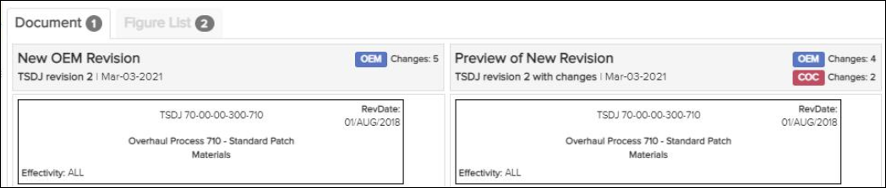
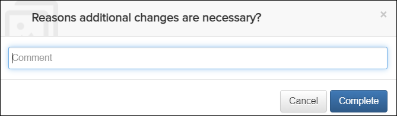
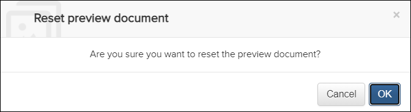

Not applicable for Pinpoint Standalone Light.
Users must have permissions for the Can merge new revisions privilege to view a merge report and resolve conflicts.

Merge Report
- The left-most All Documents panel shows all documents with changes in the revision. The icon on the document displays a warning icon for documents that contain conflicts. The footer for that panel lists an overall percent of documents resolved versus documents with conflicts.
- The main panel shows the currently selected document, which defaults to the
first one on the list. This panel displays a side-by-side view of either the
document content or the figure list, depending on the tab selected.The number shown in the Document or Figure List tab in the main panel shows the number of conflicts in the document or figures. For example, there is one conflict in this document:

Document and Figure List Tabs
The left side of the main panel shows the new OEM revision. The right side shows the preview of the new OEM revision with the added COC changes.
- The far-right side of the panel shows available actions for each section of the document.
- The top-right part of the screen has these icons:
-
Perform additional authoring changes
icon
This option is available when all conflicts of the current documents are resolved. You can perform additional changes to the right-side content before completing the merge. This is useful when you want to resolve a conflict using OEM or COC but also copy content from the version not selected. For example, you may want to keep your COC version but copy OEM changes to the COC version.
When you select this option, this confirmation message appears:
Enter the reason for the additional changes in the Comment field, and click the button.Note: The content entered in the Comment field is visible to auditors in the Merge History dialog. Refer to Merge Audit.  Merge History icon
Merge History iconThis option is available after any merge action and allows an auditor to display all merge actions for the current document. Refer to Merge Audit.
-
Reset preview document icon
This option is available after any merge action and restores the right-side document to its initial state. Any merge actions are removed, and the merge history cleared for the document.
When you select this option, this confirmation message appears:

Click the button to reset the document to its
initial state.
button to reset the document to its
initial state.
- icon/field
This icon/field indicates the total number of conflicted sections, figures, or sheets in the current document.
-
Perform additional authoring changes
icon
-
Click the
 button.
A success message appears. A icon replaces the conflict buttons on the right side of the report.Note: If you hover over the icon, it changes to a Rollback changes icon. Click the icon to revert the previously selected conflict resolution. The resolution options appear again. You can select an option to change the conflict resolution.
button.
A success message appears. A icon replaces the conflict buttons on the right side of the report.Note: If you hover over the icon, it changes to a Rollback changes icon. Click the icon to revert the previously selected conflict resolution. The resolution options appear again. You can select an option to change the conflict resolution.Refer to Abort or Complete the Merge for information on aborting or completing the merge.